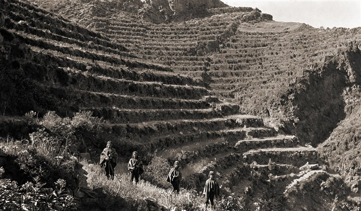

La antigua ciudad de Machu Picchu fue habitada, aproximadamente, a partir del siglo IX por poblaciones indígenas de los alrededores de la Vilcabamba y del Valle Sagrado.
A pesar de que Machu Picchu se encuentra en una zona montañosa y selvática los primeros pobladores lograron realizar trabajos de agricultura, lo que conllevó al asentamiento de sus primeros pobladores, hasta la construcción de la ciudad en la cima de la montaña. Así se fue gestando su historia, luchas, olvido y su redescubrimiento.
